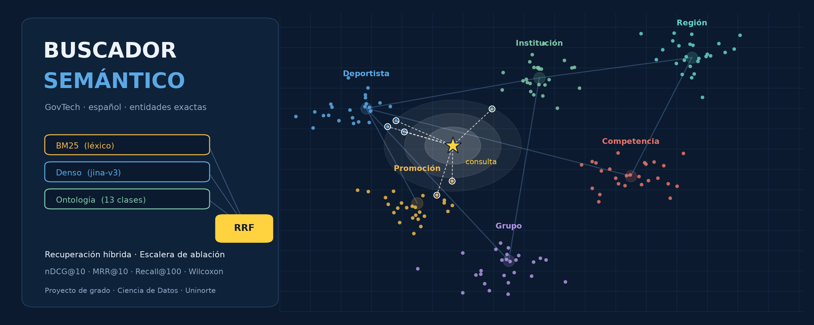

Buscador Semántico GovTech#
Autor: Luis David Peñaranda · Asesor: Carlos de Oro Aguado
Pregrado en Ciencia de Datos · Universidad del Norte
{kind=link}

Introducción#
Las plataformas de software del sector público acumulan un conocimiento funcional enorme: reportes, módulos, procesos y trámites. A medida que crecen, sus usuarios tardan cada vez más en encontrar lo que necesitan. Escriben con palabras distintas a las del sistema, buscan por el nombre propio de una persona o de una institución, o preguntan por cosas que ni siquiera tienen un reporte donde vivir. Cada búsqueda fallida termina en una llamada a soporte o en una tarea que no se completa.
Este libro documenta, de principio a fin, el diseño y la evaluación de un buscador semántico en español para una plataforma GovTech de gestión deportiva. El problema se trata como lo que es, una tarea de recuperación de información: no se entrena un modelo nuevo, sino que se combinan modelos existentes y se miden con rigor.
Qué se propone#
Un recuperador híbrido con cuatro piezas:
Señal léxica (BM25), fuerte en coincidencias exactas y nombres propios.
Señal densa (
jina-embeddings-v3, multilingüe y con representación Matryoshka), fuerte en significado aunque cambien las palabras.Ontología del dominio (13 clases, 20 relaciones), que enriquece la descripción de cada reporte antes de indexarla.
Fusión por rango (RRF), que combina las dos listas sin entrenamiento, y un realce opcional por entidad detectada.
Cada pieza se evalúa por separado con una escalera de ablación de cinco configuraciones.
Qué se encontró#
La demanda real está muy concentrada: cinco reportes explican el 86% de 9.051 consultas, y un dominio entero (Competencias) tiene cero consultas porque no existe ningún reporte que lo exponga.
La configuración híbrida con ontología es la que mejor recupera el reporte correcto (nDCG@10 de 0,936 en el conjunto inicial y 0,948 a escala) y la única que no pierde cobertura cuando el corpus crece a 833 documentos.
Con un conjunto ampliado a partir del historial real (55 consultas de nombre propio), la ventaja del híbrido sobre BM25 pasa a ser estadísticamente significativa.
El realce por entidad resultó inestable y se deja fuera de la primera versión.
Truncar el embedding a 256 dimensiones mantiene la calidad con 75% menos memoria.
Cómo está organizado#
Contexto y datos: análisis exploratorio del historial de consultas y construcción de la ontología.
Benchmarks de la escalera de ablación: resultados por configuración y por tipo de consulta, diagnóstico del realce, eficiencia (Matryoshka y fragmentación).
Validez externa y escala: evaluación con consultas derivadas del uso real, expansión del corpus al dominio de Competencias y ampliación del poder estadístico.
Síntesis: resumen ejecutivo, hoja de ruta de la versión 2 y una guía de estudio con el significado de cada métrica.
Cada notebook se presenta con sus salidas ya ejecutadas y todo su código visible. Todos los nombres propios que aparecen en las consultas de ejemplo son sintéticos: ningún dato personal forma parte del índice ni de este libro.
Herramientas#
Python, sentence-transformers con jina-embeddings-v3, BM25 implementado desde cero,
NumPy, SciPy, pandas y Matplotlib.